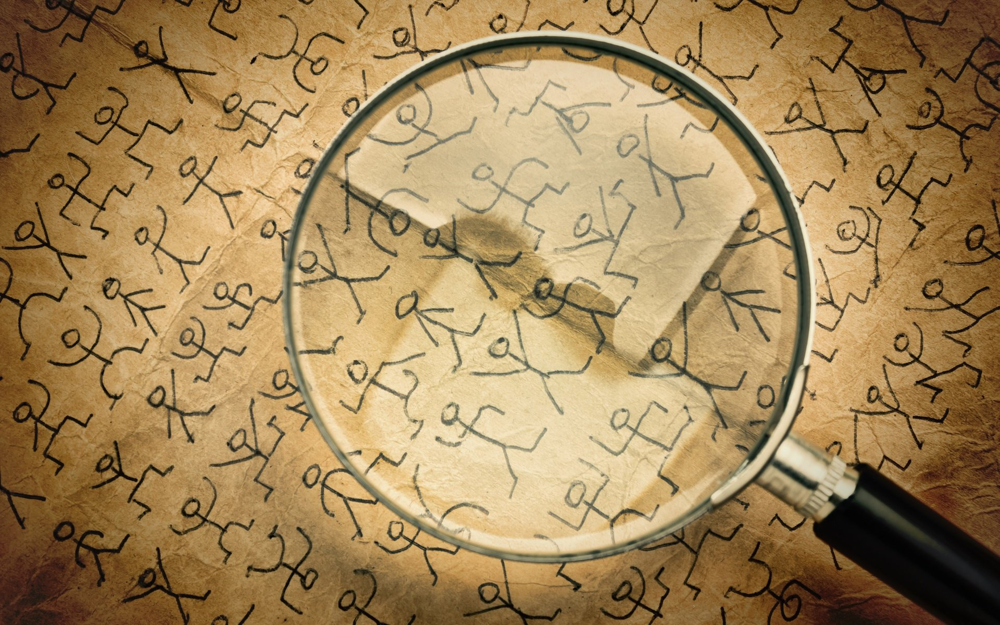
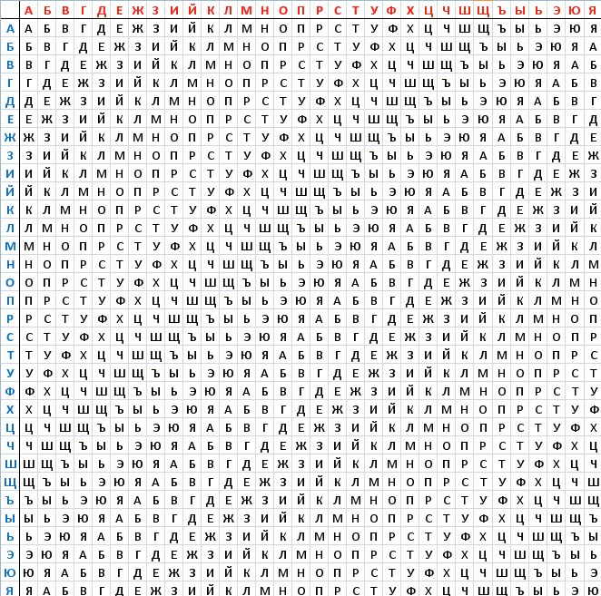

Шифрование или криптография берёт своё начало с 3-го тысячилетия до нашей эры. Тогда схема шифрования была проста - замена буквы алфавита другой буквой или же символом.

Но время идёт, технологии развиваются и криптография не исключение. В 15 веке в Европе и уже в 19 веке на Ближнем Востоке начали использовать более сложный

Разберём на примере шифра Виженера:
- Есть определённое сообщение которое мы хотим зашифровать и есть ключевое слово для дешифровки.
- Смотрим в шифр Виженера и смотрим на ключевое слово.
- Запоминаем строку где находится первая буква ключевого слова.
- Смотрим на шифр Виженера и находим первую букву шифруемого слова в таблице.
- Проводим зрительную линию от первой буквы шифруемого слова и от первой буквы ключевого слова.
- Буква где пересекаются первая буква ключевого слова и шифруемого слова и будет первой буквой зашифрованного сообщения.
- Повторяем процедуру пока не зашифруем сообщение полностью.
Если математическим языком:
- Есть шифруемое сообщение(x1,x2,x3 и т.д. где x - буквы сообщения) и есть n количество простых (моноалфавитных) шифров (если проще то ключевое слово где n - его буквы).
- Тогда к x1 будет применяться шифр n1, к x2 - n2.
- Когда взятое количество n моноалфавитных шифров закончилось - повторяем процедуру по кругу и так пока не зашифруем сообщение полностью.
Дальше в деле начали использовать электромеханические приборы для упрощения процесса и происходило это от начала и до середины 20 века.
Начиная с середины 20 века и до 70-х годов начали использоватьматематическую криптографию. Обязательным этапом создания шифра стало изучение его уязвимостей, но в большей мере всё оставалось по прежнему - использовали старую добрую классическую криптографию.
И наконец с 1970 и по наше время идёт современная криптография. Именно тогда появилась криптография с открытым ключом, кстати, использование криптографии частными лицами в разных странах очень сильно различается - где-то разрешена и используется, а где-то запрещена на отрез.
Криптография давно стала неотъемлемой частью нашей с вами жизни и используется повсеместно: шифрование писем, документов, телекомунникаций, сообщений и т.д.